..."a non-profit organization that promotes openness, innovation and participation on the Internet"...
On February 23, 1998, Netscape created the Mozilla Organization
to co-ordinate the development of the Mozilla Application Suite
The Mozilla Foundation was launched on July 15, 2003, to ensure
Mozilla could survive without Netscape
American non-profit organization that exists to support
and collectively lead the open source Mozilla project.
Mountain View office which was home to both
the Mozilla Foundation and the Mozilla Corporation until January 2021
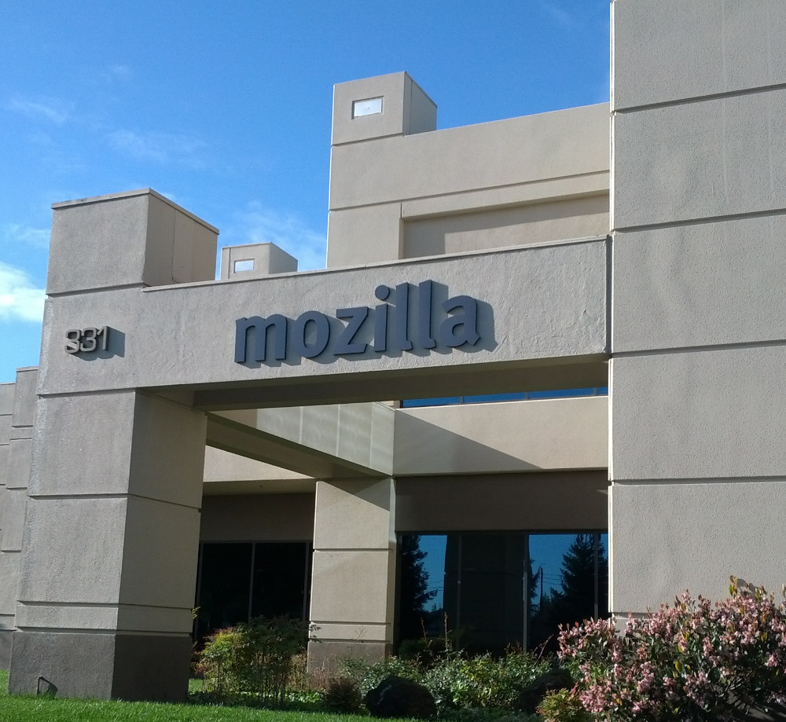
Mozilla Corporation
On August 3, 2005, the Mozilla Foundation announced the creation of
Mozilla Corporation
Is a wholly owned subsidiary of the Mozilla Foundation
that coordinates and integrates the development of Internet-related applications
Mozilla's headquarters in San Francisco, California
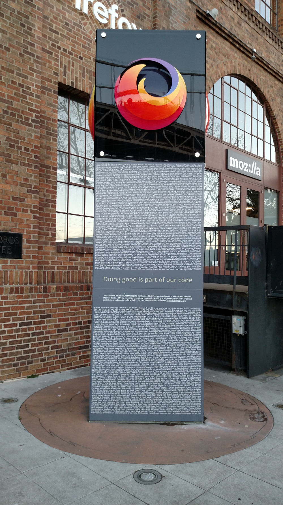
List of Mozilla products
The Mozilla Foundation has aproximately 50 projects and applications. There are some of them...
Client applications
Firefox Browser – An open-source web browser.
Mozilla Thunderbird – An email and news client.
etc.
Components
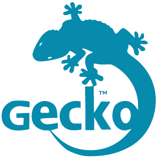
Gecko – The layout engine.
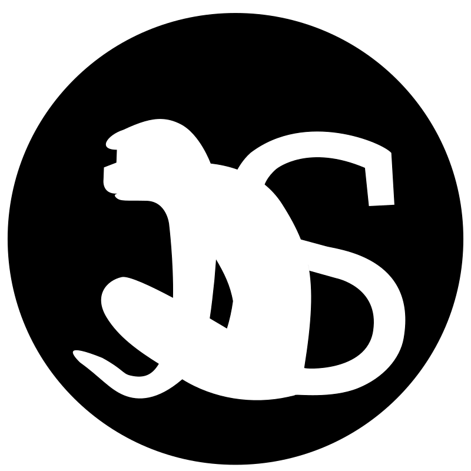
SpiderMonkey – The JavaScript engine written in C programming language.
etc.
Development tools
Bugzilla – A bugtracker.
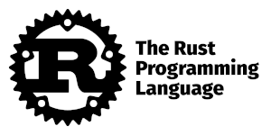
Rust (programming language)
etc.
API/Libraries
Network Security Services (NSS) – A set of libraries designed to support cross-platform
development of security-enabled client and server applications.
etc.
Other tools
Mozilla Directory SDK – For writing applications which access, manage, and update
the information stored in an LDAP directory.
etc.
Technologies
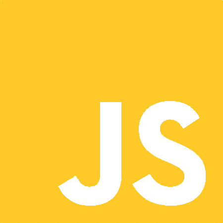
JavaScript – The de facto client-side scripting programming language originated from Netscape Navigator.
etc.
...and some abandoned
Camino – A web browser intended for Mac OS X.
Firefox OS – An open source operating system for smartphones and tablet computers mainly based on HTML5.
etc.
Most important products and resources nowadays (IMHO)
Mozilla Firefox web browser
MDN Web Docs
Mozilla Firefox
...or simply Firefox is a free
and open-source web browser
Mozilla Firefox ex "Phoenix"
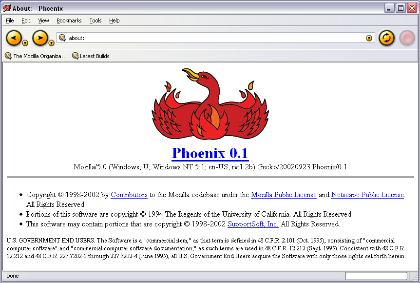
Firefox logo evolution
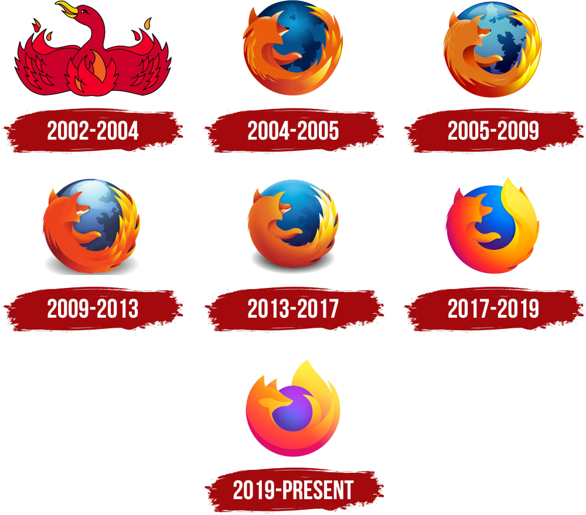
MDN Web Docs
MDN Web Docs, previously Mozilla Developer Network and formerly
Mozilla Developer Center, is a documentation repository and learning
resource for web developers.
The project was started by Mozilla in 2005 as a unified place for documentation
about open web standards, Mozilla's own projects, and developer guides.
In 2017, Microsoft, Google, and Samsung announced that
they would shut down their own documentation projects
and move all their documentation to MDN Web Docs.
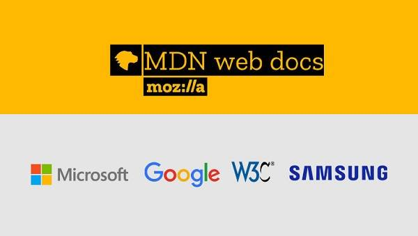
Mozilla Manifesto
Lays out 10 key principles
...promotes free software, universal access to the internet, and interoperable
technologies, and emphasizes values of privacy, openness, and a belief in the
ability of the internet to enrich the lives of people...
1
The internet is an integral part of modern life — a key component
in education, communication, collaboration, business, entertainment and society as a whole.
2
The internet is a global public resource that must remain
open and accessible.
3
The internet must enrich the lives of individual human beings.
4
Individuals’ security and privacy on the internet are fundamental
and must not be treated as optional.
5
Individuals must have the ability to shape the internet and their own experiences on it.
6
The effectiveness of the internet as a public resource depends upon interoperability
(protocols, data formats, content), innovation and decentralized participation worldwide.
7
Free and open source software promotes the development of the internet as a public resource.
8
Transparent community-based processes promote participation, accountability and trust.
9
Commercial involvement in the development of the
internet brings many benefits; a balance
between commercial profit and public benefit is critical.
10
Magnifying the public benefit aspects of the internet is an important goal, worthy
of time, attention and commitment.
Mozilla Manifesto - Pledge
The manifesto also includes a pledge outlining Mozilla's commitments
1
Build and enable open-source technologies and communities that support the Manifesto’s principles;
2
Build and deliver great consumer products that support the Manifesto’s principles;
3
Use the Mozilla assets (intellectual property such as copyrights and trademarks, infrastructure,
funds, and reputation) to keep the Internet an open platform;
4
Promote models for creating economic value for the public benefit; and
5
Promote the Mozilla Manifesto principles in public discourse and within the Internet industry.